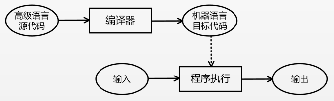
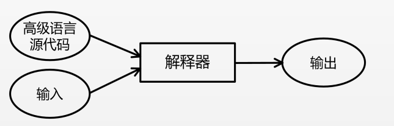
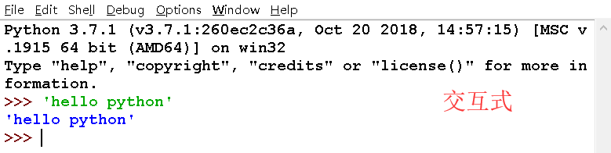
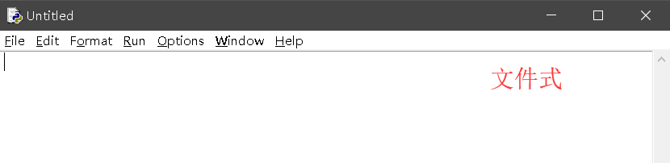

原文连接:https://www.cnblogs.com/Cyzhouke/p/11004726.html
1.程序设计语言概述
程序设计语言：指计算机能够理解和识别用户操作意图的一种交互体系，它按照特定规则组织计算机指令，使计算机能够自动进行各种运算处理。
计算机程序：按照程序设计语言规则组织起来的一组计算机指令。
高级编程语言根据执行机制不同可分为：静态语言，脚本语言。
静态语言：采用编译方式执行。例：C语言，java语言。
脚本语言：采用解释方式执行。例：js语言，php语言，python语言。
什么是编译与解释？
编译：将源代码通过编译器转换为目标代码的过程。
解释：将源代码通过解释器逐条转换成目标代码同时逐条运行目标代码的过程。
编译与解释的区别：
-
- 编译是一次性的将代码编译，一旦程序被编译，不再需要编译程序或者源代码。对于相同源代码，编译所产生的目标代码执行速度更快，而且目标代码不需要编译器就可以运行，在同类型操作系统上使用灵活。
- 解释是在每次程序运行时都需要解释器和源代码。解释执行需要保留源代码，程序纠错和维护十分方便。只要存在解释器，源代码就可以在任何操作系统上运行，可可移植性好。


2.python程序的运行方式
python程序有两种运行方式：交互式，文件式。
交互式：利用python解释器即时响应用户输入的代码，给出输出结果。交互式一般用于调试少量代码。
文件式：将python程序写在一个或者多个文件中，启动python解释器批量执行文件中的代码。


启动IDLE所显示的环境就是python交互式运行环境，在>>>提示符输入代码就可直接运行，输入exit（)或者quit()退出，没有>>>的行表示运行结果。
文件式程序在IDLE的编辑窗口中编写，可以使用快捷键'F5'或在菜单中选择"Run ---> Run Module"选项运行代码。对于py文件，也可以通过windows的cmd命令行运行python程序。
没有安装python解释器的操作系统无法直接运行python程序。
3.IPO程序编写方法
输入数据(Input)：输入是一个程序的开始，程序要处理的数据有多种来源，形成了多种输入方式。包括：文件输入，网络输入，控制台输入，随机数据输入，内部参数输入等。
处理数据(Process)：程序对输入数据进行计算产生输出结果的过程。计算问题的处理方法统称位"算法"。
输出数据(Output)：程序展示运算成果的方式。例：控制台输出，图形输出，文件输出，网络输出。
4.python程序特点：
- 通用性
- 语法简洁
- 生态高产
- 平台无关
- 强制可读
- 支持中文
5.python小程序的实现
# 斐波那契数列的计算
a, b = 0, 1
while a <1000:
print(a, end=',')
a, b = b, a+b# 圆面积的计算
r = 25
area = 3.1415 * r * r
print(area)
print("{:.2f}".format(area))# 五角星
from turtle import *
color('red', 'red')
begin_fill()
for i in range(5):
fd(200)
rt(144)
end_fill()
done() # 获取程序运行时间
import time
limit = 10*1000*1000
start = time.perf_counter()
while True:
limit -= 1
if limit <= 0:
break
delta = time.perf_counter() - start
print('程序运行时间是：()秒'.format(delta)) # 绘制七彩圆圈
import turtle
colors = ['red','orange','yellow','green','blue','indigo','purple']
for i in range(7):
c = colors[i]
turtle.color(c,c)
turtle.begin_fill()
turtle.rt(360/7)
turtle.circle(50)
turtle.end_fill()
turtle.done()